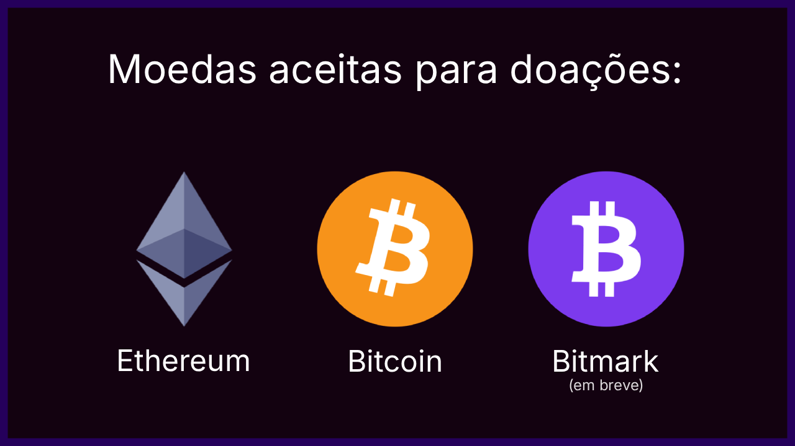

Símbolo
O símbolo do Bitmark é formado pela letra “B” do Bitcoin em orientação vertical, centralizada sobre um campo circular roxo.
- A forma do símbolo nunca deve ser alterada
- Não utilizar gradientes, sombras ou efeitos
- Sempre aplicado em cor sólida
Versão Oficial
Versão canônica do símbolo: branco sólido sobre campo circular roxo.
Cor Institucional
Bitmark Purple
Única cor institucional
Única cor institucional
#7C3AED
O Bitmark utiliza uma única cor institucional. Tons neutros existem apenas para suporte técnico e legibilidade.
Tipografia
A tipografia oficial do Bitmark é Inter. Ela existe para registrar, não para persuadir.
- Regular (400) — texto
- Medium (500) — subtítulos
- SemiBold (600) — títulos
- Bold (700) — números e destaque técnico
Manifesto
Bitmark não promete.
É apenas uma marca.
Uma unidade registrada porque alguém decidiu marcar.
Valor não é revelação. É insistência.
Mark the beat. Take the bit.
Caso este guia tenha sido útil, doações são bem-vindas. Elas ajudam a manter o projeto acessível e documentado.

Ethereum (ETH)
0xeb256FC3B92828E90458778d89312CA511ACE3bd
Bitcoin (BTC)
bc1qyjsjfmmhwsru8cu09az0yjpk7rqdadehnh0stt